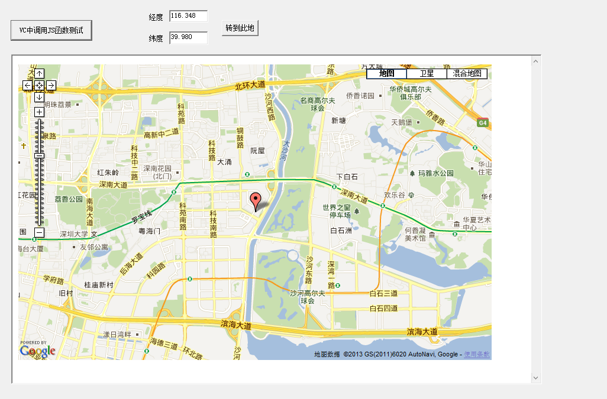

在完成了基本功能以后，接下来就可以实现输入经纬度在地图中显示地点的功能了。这里就要用到VC和JavaScript的混合编程了。
如何在VC中调用JavaScript的函数，以下两个分别是CWebPage类的.h和.cpp文件：
WebPage.h
// WebPage.h: interface for the CWebPage class.
//
//////////////////////////////////////////////////////////////////////
#if !defined(AFX_WEBPAGE_H__AEBD50B8_EE66_40AB_8B92_C4EECB9BCD22__INCLUDED_)
#define AFX_WEBPAGE_H__AEBD50B8_EE66_40AB_8B92_C4EECB9BCD22__INCLUDED_
#if _MSC_VER > 1000
#pragma once
#endif // _MSC_VER > 1000
#include <atlbase.h>
#include <Mshtml.h>
class CWebPage
{
public:
CWebPage();
virtual ~CWebPage();
bool SetDocument(IDispatch* pDisp);
LPDISPATCH GetHtmlDocument() const;
const CString GetLastError() const;
bool GetJScript(CComPtr<IDispatch>& spDisp);
bool GetJScripts(CComPtr<IHTMLElementCollection>& spColl);
CString ScanJScript(CString& strAText, CStringArray& args);
bool CallJScript(const CString strFunc,CComVariant* pVarResult = NULL);
bool CallJScript(const CString strFunc,const CString strArg1,CComVariant* pVarResult = NULL);
bool CallJScript(const CString strFunc,const CString strArg1,const CString strArg2,CComVariant* pVarResult = NULL);
bool CallJScript(const CString strFunc,const CString strArg1,const CString strArg2,const CString strArg3,CComVariant* pVarResult = NULL);
bool CallJScript(const CString strFunc,const CStringArray& paramArray,CComVariant* pVarResult = NULL);
protected:
void ShowError(LPCSTR lpszText);
protected:
CComPtr<IHTMLDocument2> m_spDoc;
CString m_strError;
};
inline
void CWebPage::ShowError(LPCSTR lpszText)
{
m_strError = "JSCall Error:\n" + CString(lpszText);
}
inline
const CString CWebPage::GetLastError() const
{
return m_strError;
}
inline
LPDISPATCH CWebPage::GetHtmlDocument() const
{
return m_spDoc;
}
CString GetNextToken(CString& strSrc, const CString strDelim,bool bTrim = false, bool bFindOneOf = true);
#endif // !defined(AFX_WEBPAGE_H__AEBD50B8_EE66_40AB_8B92_C4EECB9BCD22__INCLUDED_)
WebPage.cpp
/////////////////////////////////////////////////////////////////
// By Eugene Khodakovsky //
// April,2002 //
// Eugene@cpplab.com //
// Last Update: April, 2002 //
/////////////////////////////////////////////////////////////////
//////// WebPage.cpp
#include "stdafx.h"
//#include "JSCall.h"
#include "WebPage.h"
#ifdef _DEBUG
#undef THIS_FILE
static char THIS_FILE[]=__FILE__;
#define new DEBUG_NEW
#endif
#define CHECK_POINTER(p)\
ATLASSERT(p != NULL);\
if(p == NULL)\
{\
ShowError("NULL pointer");\
return false;\
}
const CString GetSystemErrorMessage(DWORD dwError)
{
CString strError;
LPTSTR lpBuffer;
if(!FormatMessage(FORMAT_MESSAGE_ALLOCATE_BUFFER | FORMAT_MESSAGE_FROM_SYSTEM,
NULL, dwError,
MAKELANGID(LANG_NEUTRAL, SUBLANG_SYS_DEFAULT),
(LPTSTR) &lpBuffer, 0, NULL))
{
strError = "FormatMessage Netive Error" ;
}
else
{
strError = lpBuffer;
LocalFree(lpBuffer);
}
return strError;
}
CString GetNextToken(CString& strSrc, const CString strDelim,bool bTrim, bool bFindOneOf)
{
CString strToken;
int idx = bFindOneOf? strSrc.FindOneOf(strDelim) : strSrc.Find(strDelim);
if(idx != -1)
{
strToken = strSrc.Left(idx);
strSrc = strSrc.Right(strSrc.GetLength() - (idx + 1) );
}
else
{
strToken = strSrc;
strSrc.Empty();
}
if(bTrim)
{
strToken.TrimLeft();
strToken.TrimRight();
}
return strToken;
}
//////////////////////////////////////////////////////////////////////
// Construction/Destruction
//////////////////////////////////////////////////////////////////////
CWebPage::CWebPage()
{
}
CWebPage::~CWebPage()
{
}
bool CWebPage::SetDocument(IDispatch* pDisp)
{
CHECK_POINTER(pDisp);
m_spDoc = NULL;
CComPtr<IDispatch> spDisp = pDisp;
HRESULT hr = spDisp->QueryInterface(IID_IHTMLDocument2,(void**)&m_spDoc);
if(FAILED(hr))
{
ShowError("Failed to get HTML document COM object");
return false;
}
return true;
}
bool CWebPage::GetJScript(CComPtr<IDispatch>& spDisp)
{
CHECK_POINTER(m_spDoc);
HRESULT hr = m_spDoc->get_Script(&spDisp);
ATLASSERT(SUCCEEDED(hr));
return SUCCEEDED(hr);
}
bool CWebPage::GetJScripts(CComPtr<IHTMLElementCollection>& spColl)
{
CHECK_POINTER(m_spDoc);
HRESULT hr = m_spDoc->get_scripts(&spColl);
ATLASSERT(SUCCEEDED(hr));
return SUCCEEDED(hr);
}
bool CWebPage::CallJScript(const CString strFunc,CComVariant* pVarResult)
{
CStringArray paramArray;
return CallJScript(strFunc,paramArray,pVarResult);
}
bool CWebPage::CallJScript(const CString strFunc,const CString strArg1,CComVariant* pVarResult)
{
CStringArray paramArray;
paramArray.Add(strArg1);
return CallJScript(strFunc,paramArray,pVarResult);
}
bool CWebPage::CallJScript(const CString strFunc,const CString strArg1,const CString strArg2,CComVariant* pVarResult)
{
CStringArray paramArray;
paramArray.Add(strArg1);
paramArray.Add(strArg2);
return CallJScript(strFunc,paramArray,pVarResult);
}
bool CWebPage::CallJScript(const CString strFunc,const CString strArg1,const CString strArg2,const CString strArg3,CComVariant* pVarResult)
{
CStringArray paramArray;
paramArray.Add(strArg1);
paramArray.Add(strArg2);
paramArray.Add(strArg3);
return CallJScript(strFunc,paramArray,pVarResult);
}
bool CWebPage::CallJScript(const CString strFunc, const CStringArray& paramArray,CComVariant* pVarResult)
{
CComPtr<IDispatch> spScript;
if(!GetJScript(spScript))
{
ShowError("Cannot GetScript");
return false;
}
CComBSTR bstrMember(strFunc);
DISPID dispid = NULL;
HRESULT hr = spScript->GetIDsOfNames(IID_NULL,&bstrMember,1,
LOCALE_SYSTEM_DEFAULT,&dispid);
if(FAILED(hr))
{
ShowError(GetSystemErrorMessage(hr));
return false;
}
const int arraySize = paramArray.GetSize();
DISPPARAMS dispparams;
memset(&dispparams, 0, sizeof dispparams);
dispparams.cArgs = arraySize;
dispparams.rgvarg = new VARIANT[dispparams.cArgs];
for( int i = 0; i < arraySize; i++)
{
CComBSTR bstr = paramArray.GetAt(arraySize - 1 - i); // back reading
bstr.CopyTo(&dispparams.rgvarg[i].bstrVal);
dispparams.rgvarg[i].vt = VT_BSTR;
}
dispparams.cNamedArgs = 0;
EXCEPINFO excepInfo;
memset(&excepInfo, 0, sizeof excepInfo);
CComVariant vaResult;
UINT nArgErr = (UINT)-1; // initialize to invalid arg
hr = spScript->Invoke(dispid,IID_NULL,0,
DISPATCH_METHOD,&dispparams,&vaResult,&excepInfo,&nArgErr);
delete [] dispparams.rgvarg;
if(FAILED(hr))
{
ShowError(GetSystemErrorMessage(hr));
return false;
}
if(pVarResult)
{
*pVarResult = vaResult;
}
return true;
}
// returned java script function name, input string is truncating
CString CWebPage::ScanJScript(CString& strAText, CStringArray& args)
{
args.RemoveAll();
CString strDelim(" \n\r\t"),strSrc(strAText);
bool bFound = false;
while(!strSrc.IsEmpty())
{
CString strStart = GetNextToken(strSrc,strDelim);
if(strStart == "function")
{
bFound = true;
break;
}
if(strStart == "/*")
{
// Skip comments
while(!strSrc.IsEmpty())
{
CString strStop = GetNextToken(strSrc,strDelim);
if(strStop == "*/")
{
break;
}
}
}
}
if(!bFound)
return "";
CString strFunc = GetNextToken(strSrc,"(",true);
CString strArgs = GetNextToken(strSrc,")",true);
// Parse arguments
CString strArg;
while(!(strArg = GetNextToken(strArgs,",")).IsEmpty())
args.Add(strArg);
strAText= strSrc;
return strFunc;
}
在对话框中添加测试调用JS函数按钮，在XXXDlg.cpp中该按钮单击消息函数中加入代码如下：
CWebPage web;
web.SetDocument(m_webBrowser.GetDocument());
web.CallJScript("jsfunctiontest");//调用JS中的jsfunctiontest函数
然后编译运行，点击按钮就会有一个名为来自网页消息弹出框，测试成功，实现VC和JavaScript的混合编程。
在对话框中添加两个编辑框和一个按钮，在编辑框中输入经度和纬度，点击按钮谷歌地图跳转到相应的地点。
按钮的点击消息响应函数中代码如下：
UpdateData(TRUE);//将控件上的值传回变量
CWebPage web;
web.SetDocument(m_webBrowser.GetDocument());
//调用JS中的函数TansTo()，并传递2个参数(纬度，经度)
web.CallJScript("TansTo", m_latitude, m_longitude);
好了，以上完成了输入经纬度在地图中显示地点的功能。
接下来就可以仔细的分析代码了。
